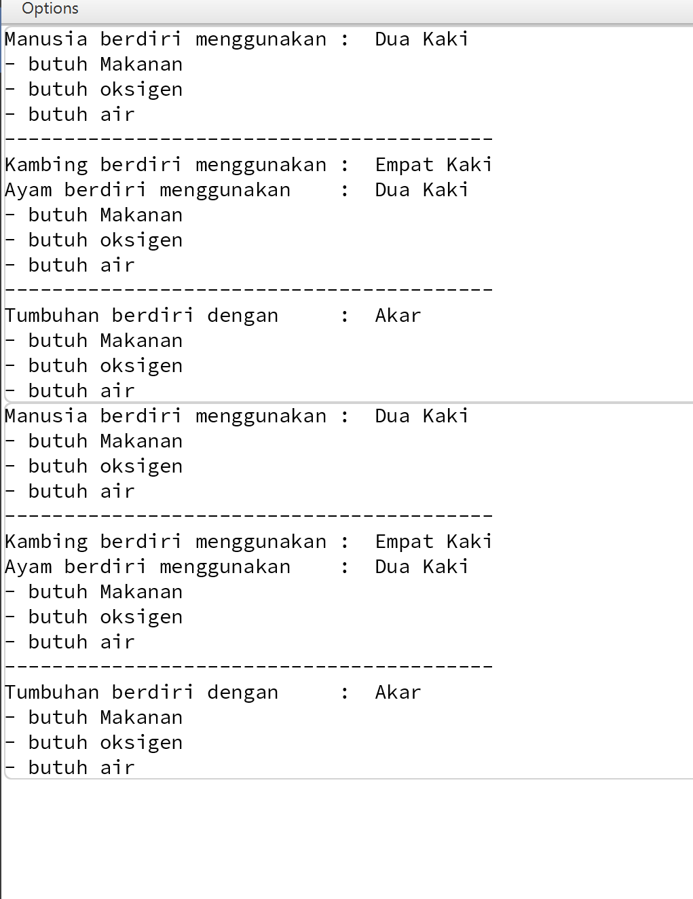

Abstract Class mirip seperti "Template Dasar" atau aturan main dari Bos di sebuah perusahaan. Kita tidak bisa membuat objek langsung dari Abstract Class (Bos), tapi kita membuat objek dari kelas turunannya (Bawahan).
Dalam kode ini:
new MakhlukHidup()).Class MakhlukHidup memberikan dua jenis perintah:
berdiri()): Aturan wajib tanpa contoh. Bos bilang: "Kalian WAJIB bisa berdiri, tapi caranya terserah kalian!".oksigen()): Fitur gratis. Bos bilang: "Ini fitur bernapas, kalian tinggal pakai saja."Karena Bos mewajibkan method berdiri(), maka:
Berikut adalah kode program Java yang sudah digabung menjadi satu file.
/*
* FILE: MainMakhlukHidup.java
* Penjelasan: Implementasi Abstract Class tanpa CSS/JS
*/
// 1. ABSTRACT CLASS (Induk)
abstract class MakhlukHidup {
// Abstract Method: Wajib diisi (override) oleh anak-anaknya
// Tidak ada body {} karena ini cuma aturan.
public abstract void berdiri();
// Concrete Method: Method biasa yang sudah ada isinya
// Anak-anaknya tinggal pakai (warisan).
public void oksigen(){
System.out.println("- butuh Makanan");
System.out.println("- butuh oksigen");
System.out.println("- butuh air");
}
}
// 2. SUBCLASS MANUSIA
class Manusia extends MakhlukHidup {
private String duaKaki;
public Manusia(String duaKaki){
this.duaKaki = duaKaki;
}
// Wajib Override method 'berdiri'
@Override
public void berdiri(){
System.out.println("Manusia berdiri menggunakan : " + duaKaki);
}
}
// 3. SUBCLASS HEWAN
class Hewan extends MakhlukHidup {
private String kakiEmpat, kakiDua;
public Hewan(String kakiEmpat, String kakiDua){
this.kakiEmpat = kakiEmpat;
this.kakiDua = kakiDua;
}
// Wajib Override method 'berdiri'
@Override
public void berdiri(){
System.out.println("Kambing berdiri menggunakan : " + kakiEmpat);
System.out.println("Ayam berdiri menggunakan : " + kakiDua);
}
}
// 4. SUBCLASS TUMBUHAN
class Tumbuhan extends MakhlukHidup {
private String Akar;
public Tumbuhan(String Akar){
this.Akar = Akar;
}
// Wajib Override method 'berdiri'
@Override
public void berdiri(){
System.out.println("Tumbuhan berdiri dengan : " + Akar);
}
}
// 5. MAIN CLASS (Untuk Menjalankan)
public class MainMakhlukHidup {
// Polimorfisme: Menerima 'MakhlukHidup' jenis apa saja
public void cekMakhlukHidup(MakhlukHidup mHidup){
mHidup.berdiri(); // Menjalankan cara berdiri masing-masing
mHidup.oksigen(); // Menjalankan fitur umum
}
public static void main(String[] args) {
MainMakhlukHidup tMakhlukHidup = new MainMakhlukHidup();
System.out.println("=== HASIL OUTPUT ===");
// Cek Manusia
tMakhlukHidup.cekMakhlukHidup(new Manusia("Dua Kaki"));
System.out.println("-----------------------------------------");
// Cek Hewan
tMakhlukHidup.cekMakhlukHidup(new Hewan("Empat Kaki", "Dua Kaki"));
System.out.println("-----------------------------------------");
// Cek Tumbuhan
tMakhlukHidup.cekMakhlukHidup(new Tumbuhan("Akar"));
}
}

berikut ini merupakan link kode saya: